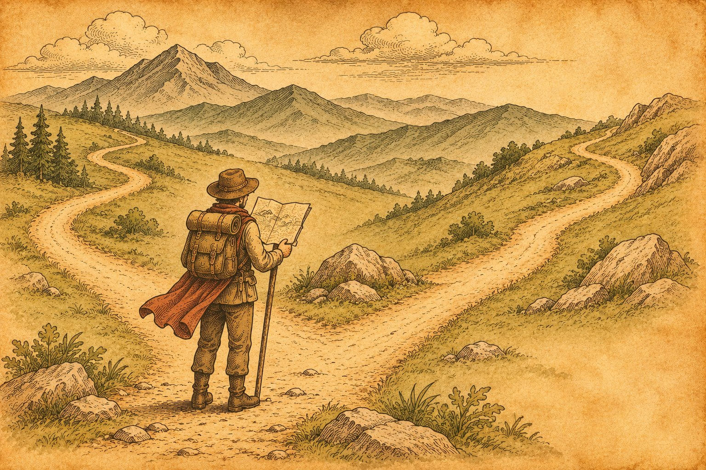
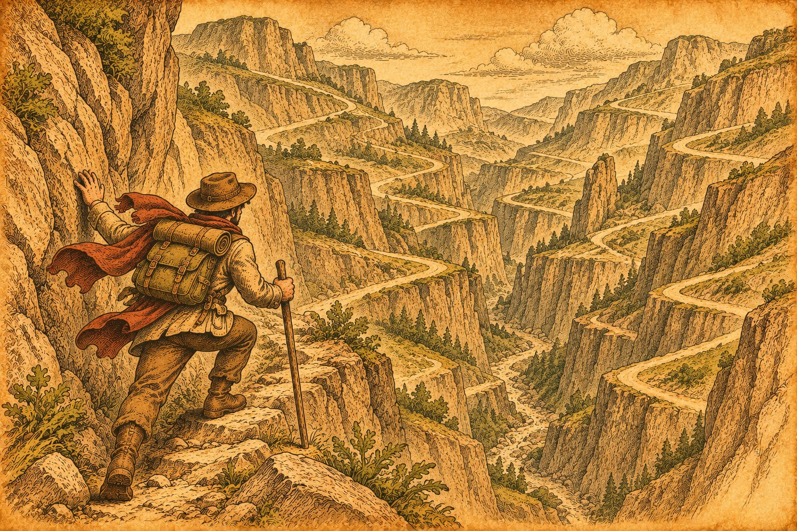
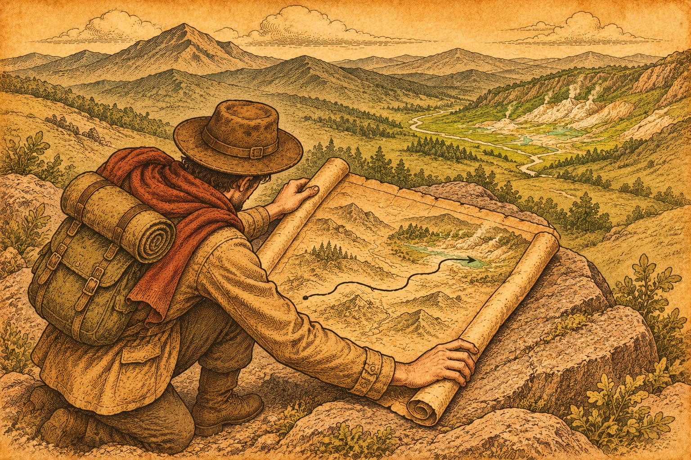
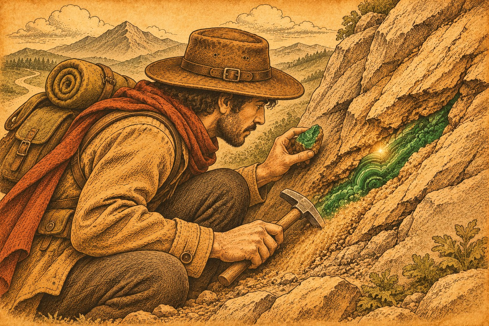
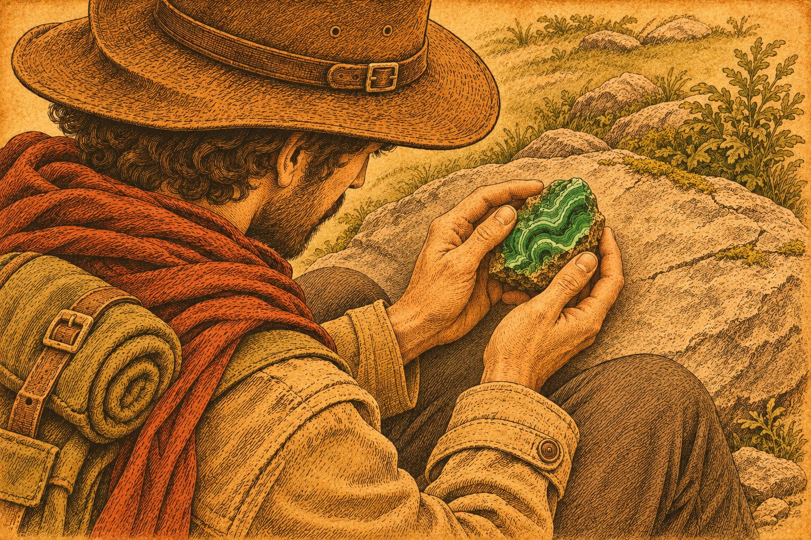
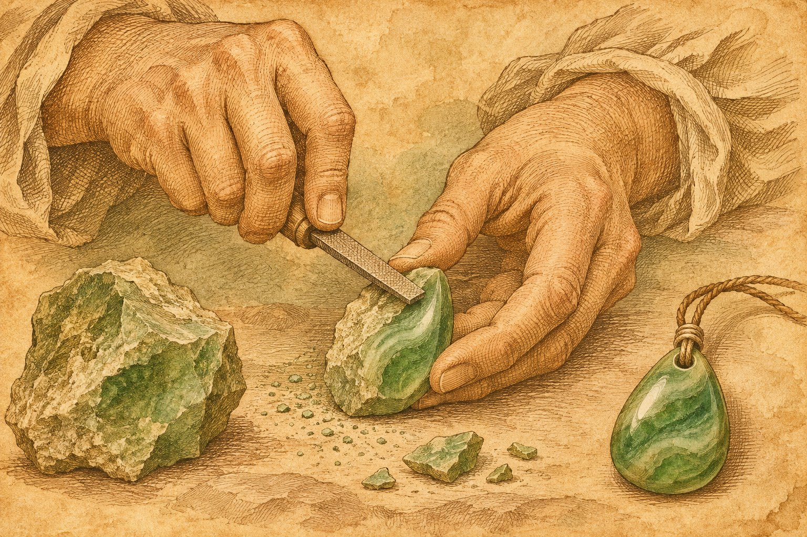
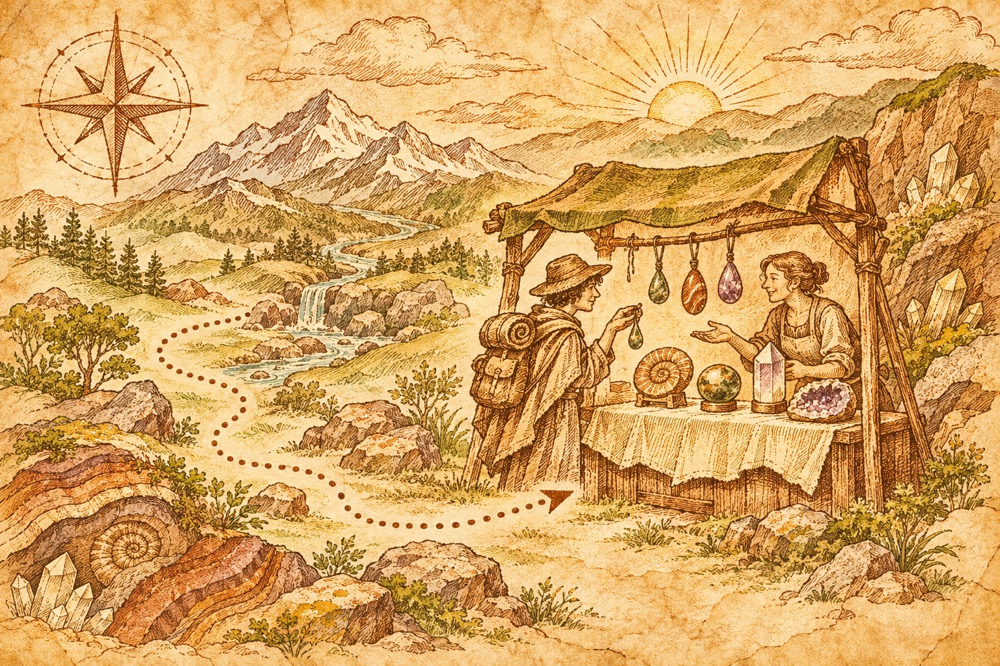
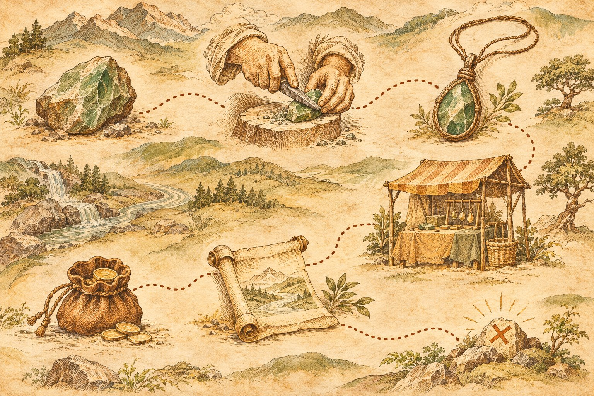

هشت ایستگاه؛ از کسب یک مهارت تا شناخت محصول و بازار.
مسیر رو پیدا کن ✦
۰۱
نقطهٔ شروعتو اینجایی
تو اینجایی! از همینجا شروع کن.
شاید دانشجویی و هنوز نمیدونی از چه راهی درآمد داشته باشی. شاید کارمندی و از خودت بپرسی: «واقعاً قرار است تا آخر عمرم برای دیگری کار کنم؟»اگر دنبال کاری با زمانی انعطاف پذیر و امکان کارکردن از هرنقطهای و ساختن چیزی با دست های خودت هستی، این نقطهٔ شروع توست.
شروع مسیرهای بزرگ همراه با یک سؤال است.

مختصاتِ آغازYOU ARE HEREنقطه را علامت بزن۰۲
ایستگاه دوممعمای بزرگ
اما از کجا شروع کنم؟
«چی بسازم؟» «از کجا یاد بگیرم؟» «اگر ساختم، چه کسی خریدارش خواهد بود؟ این سؤالها طبیعیاند. قرار نیست از روز اول جواب همه را بدانی؛ اول باید مسیر یادگیری، ساخت محصول و شناخت بازار را پیدا کنی.
مأموریت بعدییک مسیر واقعی پیدا کن.

معمای مسیرFIND A WAYهر سؤال، یک سرنخ است۰۳
ایستگاه سومنقشه پیدا شد
شاید همینجا، نقشه پیدا شود.
مسیری که در آن یاد میگیری، خلق میکنی، محصول میسازی، بازار را میشناسی و راههای معرفی و فروش را بررسی میکنی. قرار نیست فقط یک تکنیک یاد بگیری؛ قرار است تصویر کاملتری از مسیر داشته باشی.
یادگیری↓خلق محصول↓شناخت بازار↓بررسی مسیر درآمد

مسیر کشف شدMAP FOUND✦ سرنخ طلایی۰۴
ایستگاه چهارمکشف گنج پنهان
اولین سرنخ: سنگ.
یک تکه سنگ خام میتواند نقطهٔ شروع یک محصول دستساز و خاص باشد؛ چیزی که ارزش و داستان خودش را دارد. هنر کار با سنگ، راهی تازه برای خلقکردن است و برای شروع لازم نیست از قبل هنرمند حرفهای باشی.
از دلِ سنگ، امکانِ ساختن معنایی تازه متولد میشود.

اولین سرنخ · مالاکیتRAW STONEرگهٔ سبز را دنبال کن۰۵
ایستگاه پنجمقدرت تو
ابزار اصلی این مسیر، دستهای توست.
لازم نیست روز اول همهچیز را بلد باشی، تجهیزات پیچیده داشته باشی یا کارگاه بزرگی راه بیندازی. با یادگیری و تمرین، میتوانی از یک مهارت دستی شروع کنی و قدمبهقدم جلو بروی.
مأموریتسنگ را به مهارت تبدیل کن.

قدرتِ دستهای توLEARN BY HANDبا همان چیزی که داری شروع کن۰۶
ایستگاه ششملحظهٔ خلق
حالا وقتِ خلقکردن است.
یک مهارت وقتی جان میگیرد که چیزی با آن بسازی؛ محصولی خاص، ساختهٔ دست تو، با داستان خودش. همین محصول میتواند نخستین چیزی باشد که از جهان ایدهٔهای تو وارد دنیای واقعی و در نهایت بازار میشود.
چیزی که امروز میسازی، میتواند محصولت باشد.

از سنگ تا محصولMADE BY HANDاثرِ دستت را بهجا بگذار۰۷
ایستگاه هفتمکشف بازار
ساختن، آخرِ مسیر نیست.
سؤال بعدی این است: مشتری تو کیست؟ چه محصولی میتواند بازار داشته باشد؟ کجا و چطور آن را معرفی کنی؟ در سمینار دربارهٔ فرصتها و مسیرهای فروش محصولات سنگی گفتوگو میکنیم.

محصول در بازارMEET YOUR MARKETمقصد محصول را پیدا کن۰۸
ایستگاه هشتمنقشه کامل میشود
چیزهایی که در این سفر کشف میکنی.
در این سمینار با بخشهای مختلف مسیر آشنا میشوی؛ از شناخت سنگ تا معرفی محصول و بررسی راههای فروش.
۰۱ دنیای کار با سنگ
۰۲ یادگیری مهارت
۰۳ خلق محصول
۰۴ شناخت مشتری و بازار
۰۵ معرفی و فروش
۰۶ مسیر تبدیل مهارت به درآمد

شش سرنخِ سفرFIELD GUIDEهمهٔ سرنخها کنار هم✦
مقصد نهاییگنج پیدا شد
مهارت + خلق + بازار = مسیر درآمد
گنج این مسیر، ساختن راهی برای درآمد از چیزیست که با دستهای خودت خلق کردهای. سمینار کافه معدن کمک میکند این مسیر را بهتر بشناسی؛ نتیجه و درآمد به انتخابها و تلاش خودت بستگی دارد.